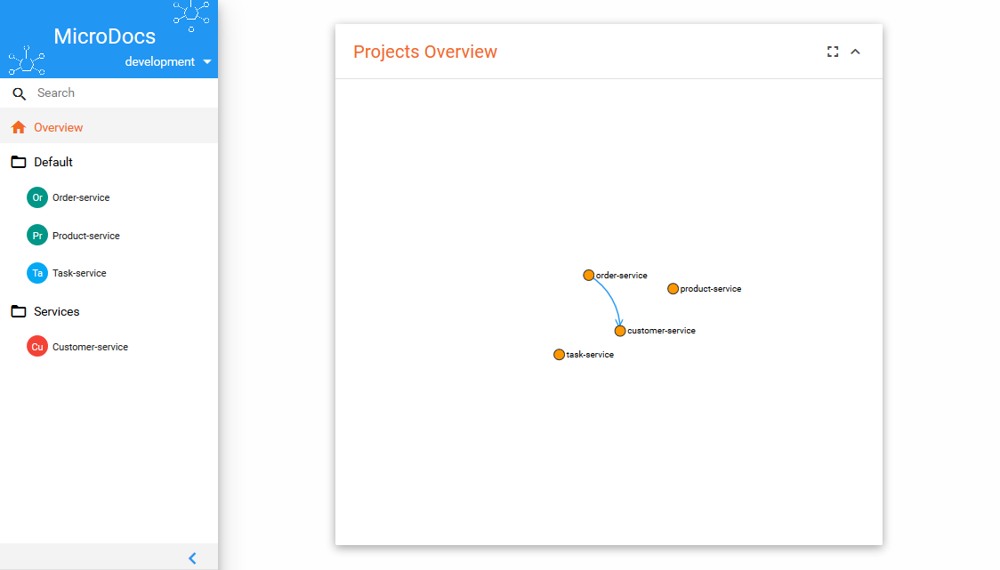
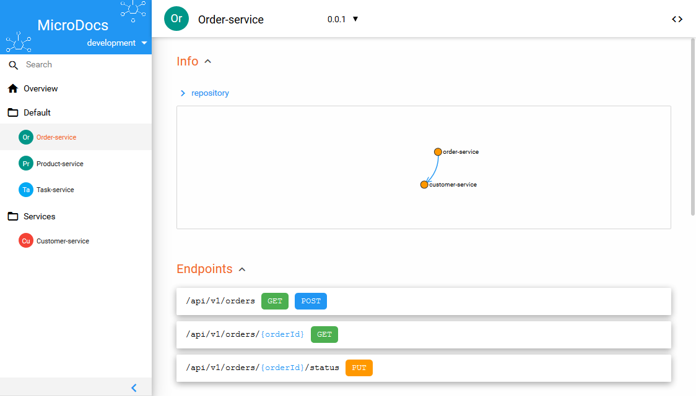

<link rel="import" href="../bower_components/polymer/polymer.html">
<link rel="import" href="./progress-pipeline.html">
<link rel="import" href="../bower_components/iron-icon/iron-icon.html">
<link rel="import" href="../bower_components/iron-icons/iron-icons.html">
<link rel="import" href="../bower_components/iron-icons/av-icons.html">
<link rel="import" href="../bower_components/paper-button/paper-button.html">
<link rel="import" href="../bower_components/neon-animation/neon-animations.html">
<link rel="import" href="../bower_components/neon-animation/neon-shared-element-animatable-behavior.html">

<dom-module id="home-route">
  <template>
    <style>
      .doc-container{
        display: flex;
        justify-content: center;
      }
      .doc-container paper-button{
        --paper-button: {
          width: 300px;
          height: 200px;
          background-color: #2196F3;
          color: white;
          margin: 20px;
        };
      }
      .doc-container paper-button .icon{
        margin-right: 10px;
      }
      .get-started{
        background-color: #FF9800;
        color: white;
        padding: 15px 50px;
      }
      .get-started iron-icon{
        margin-right: 5px;
      }
    </style>

    <!-- Header -->
    <header id="head">
      <div class="container">
        <div class="row">
          
          
          <h1 class="lead">Boost your Microservices pipelines</h1>
          <p class="tagline">MicroDocs is created and proven by
            <a href="https://maxxton.com" target="_blank">Maxxton</a>
          </p>
          <p>
            <paper-button class="get-started" on-click="_goToAction" data-section="general">
              <iron-icon icon="av:play-arrow"></iron-icon>
              Get Started
            </paper-button>
          </p>
        </div>
      </div>
    </header>
    <!-- /Header -->

    <!-- Intro -->
    <div class="container text-center">
      <br> <br>
      <h2 class="thin">MicroDocs centralises your RestAPI Documentation and keeps it organised!</h2>
      <p class="text-muted">
        MicroDocs is an unique open source solution for the RestAPI Documentation.
        It gives you the ability to organise many projects and keeps track of different versions on different
        environments.
      </p>
    </div>
    <!-- /Intro-->
    <div class="container text-center preview">
      <h3 class="thin">Easy Setup with Docker</h3>
      <br>
      <code>docker run -d --name <span class="highlight">microdocs</span> -p <span class="highlight">3000</span>:3000
        -v
        <span class="highlight">/my/data</span>:/microdocs/microdocs-server/data maxxton/microdocs</code>
    </div>
    <div class="container text-center">
      <a href="../demo">
        
      </a>
      <a href="../demo">
        
      </a>
    </div>


    <div class="container text-center preview">
      <h2 class="thin">How MicroDocs integrates with your Continuous Deployment</h2>
      <progress-pipeline></progress-pipeline>
    </div>

    <div class="container text-center preview" on-activate="_goToDocumentation">
      <h2 class="thin">Documentation</h2>
      <div class="doc-container">
        <paper-button raised on-click="_goToDocumentation" data-route="general" id="general-button"><iron-icon class="icon" icon="autorenew"></iron-icon> General</paper-button>
        <paper-button raised on-click="_goToDocumentation" data-route="server" id="server-button"><iron-icon class="icon" icon="cloud"></iron-icon> Server</paper-button>
        <paper-button raised on-click="_goToDocumentation" data-route="plugins" id="plugins-button"><iron-icon class="icon" icon="extension"></iron-icon> Plugins</paper-button>
        <paper-button raised on-click="_goToDocumentation" data-route="configuration" id="configuration-button"><iron-icon class="icon" icon="settings"></iron-icon> Configuration</paper-button>
      </div>
    </div>

    <!-- Highlights - jumbotron -->
    <div class="jumbotron top-space">
      <div class="container">

        <h3 class="text-center thin">Reasons to use MicroDocs</h3>

        <div class="row">
          <div class="col-md-3 col-sm-6 highlight">
            <div class="h-caption"><h4><i class="fa fa-heart fa-5"></i>Never break anything</h4></div>
            <div class="h-body text-center">
              <p>
                MicroDocs detects breaking changes in RestAPI calls between projects.
                So you are always aware when you break something and never face the problem again of incompatible
                RestAPI's
              </p>
            </div>
          </div>
          <div class="col-md-3 col-sm-6 highlight">
            <div class="h-caption"><h4><i class="fa fa-flash fa-5"></i>Framework supported</h4></div>
            <div class="h-body text-center">
              <p>
                MicroDocs has currently a Crawler for the <strong>Spring Framework</strong>. But because MicroDocs
                is
                compatible with the OpenApi specifictations, you can also use <a
                      href="http://swagger.io/open-source-integrations/">Swagger Tools</a>
              </p>
            </div>
          </div>
          <div class="col-md-3 col-sm-6 highlight">
            <div class="h-caption"><h4><i class="fa fa-cogs fa-5"></i>Continuous Integration</h4></div>
            <div class="h-body text-center">
              <p>MicroDocs fits perfectly in your CI or CD pipeline. There are currently plugins for Jenkins and
                Gradle,
                besides that does MicroDocs works well with <a href="http://swagger.io/open-source-integrations/">Swagger
                  Tools</a> and <a href="https://apiblueprint.org/tools.html">Api Blueprint Tools</a></p>
            </div>
          </div>
          <div class="col-md-3 col-sm-6 highlight">
            <div class="h-caption"><h4><i class="fa fa-smile-o fa-5"></i>Keep in control of your RestAPI</h4></div>
            <div class="h-body text-center">
              <p>
                You are in control of your own MicroDocs server. Browse and explore your Api's using the web
                interface.
              </p>
            </div>
          </div>
        </div> <!-- /row  -->

      </div>
    </div>
    <!-- /Highlights -->

    <!-- container -->
    <div class="container">
      <h2 class="text-center top-space">Get started now!</h2>
      <br>
      <p class="text-center">
        <paper-button class="get-started" on-click="_goToAction" data-section="general">
          <iron-icon icon="av:play-arrow"></iron-icon>
          Get Started
        </paper-button>
      </p>
    </div>


    <footer id="footer" class="top-space">

      <div class="footer2">
        <div class="container">
          <div class="row">

            <div class="col-md-6 widget">
              <div class="widget-body">
                <p class="simplenav">
                  <a href="#/home">Home</a> |
                  <a href="#/documentation/general/index">Get started</a> |
                  <a href="../demo">Demo</a> |
                  <a href="https://github.com/MaxxtonGroup/microdocs"><i class="fa fa-github fa-2"></i> Github</a>
                </p>
              </div>
            </div>

            <div class="col-md-6 widget">
              <div class="widget-body">
                <p class="text-right">
                  Copyright &copy; 2016, <a href="https://maxxton.com">Maxxton Group</a>
                </p>
              </div>
            </div>

          </div> <!-- /row of widgets -->
        </div>
      </div>
    </footer>
  </template>
  <script>
    Polymer({
      is: 'home-route',
      behaviors: [
        Polymer.NeonSharedElementAnimatableBehavior
      ],
      properties: {
        route: {
          type: Object,
          notify: true
        },
        animationConfig: {
          value: function () {
            return {
              'entry': [{
                name: 'fade-in-animation',
                node: this,
                timing: 0
              }],
              'exit': [{
                name: 'hero-animation',
                id: 'hero',
                fromPage: this
              }]
            };
          }
        }
      },

      _goToAction: function(e){
        var section = e.target.dataSection || e.target.dataset.section;
        var document = e.target.dataDocument || e.target.dataset.document;
        this._goToUrl(section, document);
      },

      _goToUrl: function(section, document){
        var target = this.$[section + '-button'];
        this.sharedElements = {
          'hero': target
        };

        var url = '/documentation/' + section;
        url += '/' + (document || 'index');
        this.set('route.path', url);
      },

      _goToDocumentation: function (event) {
        var target = event.target;
        while(target && target.tagName !== 'PAPER-BUTTON'){
          target = target.parentNode;
        }
        if(target) {
          this.sharedElements = {
            'hero': target
          };
          this.set('route.path', '/documentation/' + target.dataset.route + '/index');
        }
      }
    })
  </script>
</dom-module>